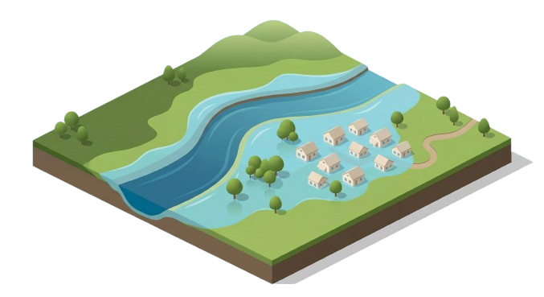
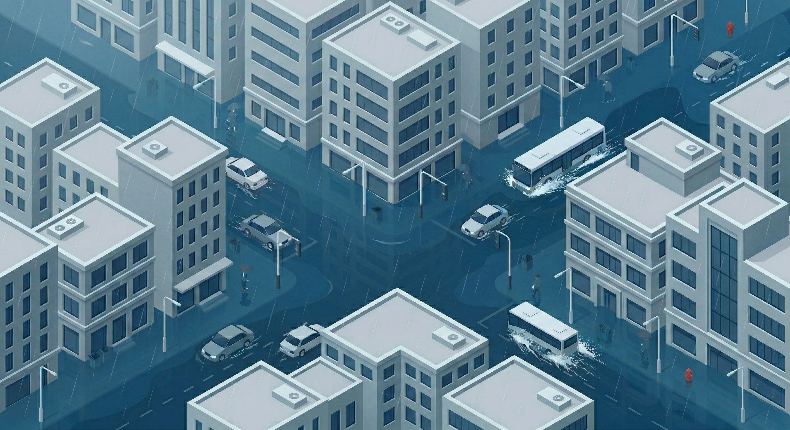
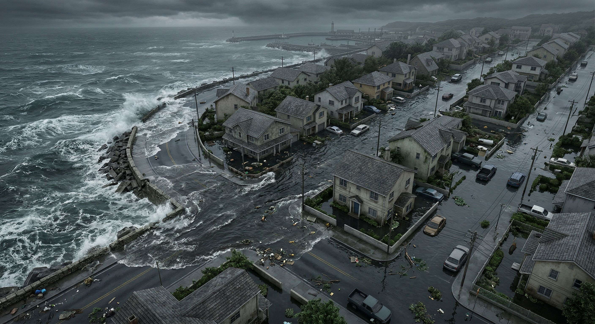
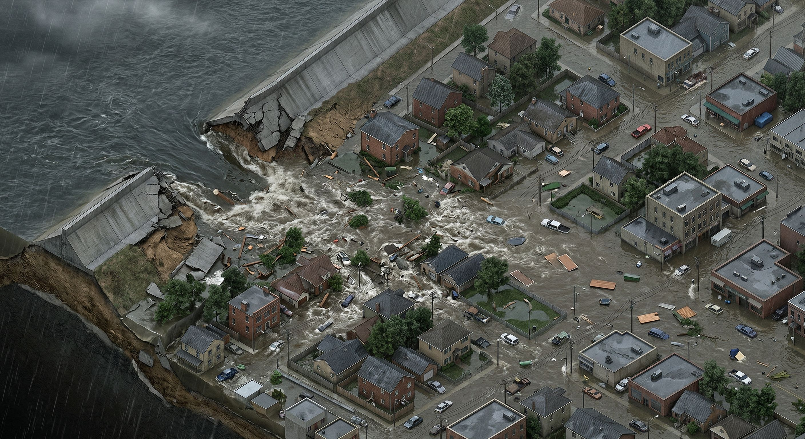

As extreme weather events intensify, flooding has become one of the most significant threats to global infrastructure and community safety. RUCEEE LAB offers a specialized suite of flood risk assessment and mitigation services tailored to these evolving climate challenges. By combining data-driven engineering with a basin-scale management approach, we ensure that protection strategies are both effective and sustainable for the long term.
Fluvial Flooding

Fluvial flooding occurs when rivers or streams overflow their banks due to sustained rainfall or upstream inflows. It develops at the watershed scale and is influenced by factors such as terrain, soil conditions, and land use. This type of flooding often leads to widespread and prolonged inundation across floodplains.
Mitigation Strategies
Levees: Levees are engineered embankments constructed along riverbanks to contain high flows and prevent overbank flooding. They are designed to increase channel capacity during peak discharge events and protect adjacent floodplain areas. However, they may transfer flood risk downstream if not integrated within a basin-scale management strategy.
River walls: River walls are rigid flood defenses, typically made of concrete or masonry, built along river channels in urban areas. They provide localized protection where space is limited and help confine floodwaters within the channel. Their effectiveness depends on design height, structural integrity, and proper maintenance.
Channel restoration: Channel restoration involves modifying river morphology to improve flow conveyance and ecological function. This may include re-meandering, removing obstructions, or stabilizing banks to reduce erosion and enhance hydraulic performance. It supports both flood mitigation and environmental sustainability.
Bypass channels: Bypass channels are engineered pathways that divert excess river flow away from vulnerable areas during high discharge events. They reduce pressure on the main channel by providing an alternative route for floodwaters. These systems are particularly effective in protecting urban centers and critical infrastructure.
Floodplain restoration: Floodplain restoration reconnects rivers with their natural floodplains, allowing excess water to spread and be temporarily stored. This reduces peak flow levels downstream and enhances natural attenuation processes. It also provides ecological benefits such as habitat creation and improved water quality.
Flood dams: Flood dams are structures designed to regulate river flow by storing excess water during flood events and releasing it gradually. They help reduce downstream peak discharge and mitigate flood risk over large areas. Their operation requires careful management to balance flood control and water resource needs.
Flood gates: Flood gates are movable barriers installed within levees, channels, or coastal defenses to control water flow during flood conditions. They can be closed during high water levels to prevent inundation and opened under normal conditions to allow flow continuity. Their performance depends on timely operation and reliable mechanical systems.
Detention and retention basins: Detention and retention basins are storage systems designed to temporarily hold excess runoff and reduce peak discharge. Detention basins release water slowly after a storm event, while retention basins store water for longer periods or allow infiltration. These systems are widely used to manage flood risk in both urban and rural catchments.
Pluvial Flooding

Pluvial flooding occurs when intense rainfall exceeds the capacity of drainage systems and the ground’s ability to absorb water, leading to surface water accumulation. It typically develops rapidly in urban and low-lying areas where impervious surfaces limit infiltration. This type of flooding is highly localized but can cause significant disruption to infrastructure and transportation networks.
Mitigation Strategies
Drainage Systems: Drainage systems are networks of pipes, channels, and inlets designed to collect and convey stormwater away from urban areas. They reduce surface water accumulation by increasing the capacity to transport runoff during rainfall events. Their effectiveness depends on proper design, maintenance, and capacity relative to storm intensity.
Permeable Land Cover: Permeable land cover allows rainfall to infiltrate into the ground rather than generating surface runoff. Materials such as permeable pavements and natural soils reduce peak flow and delay runoff generation. This approach supports decentralized stormwater management and groundwater recharge.
Urban Vegetation: Urban vegetation, including trees, green spaces, and green roofs, helps intercept rainfall and enhance infiltration. It reduces runoff volumes and slows down surface flow, contributing to flood mitigation. In addition, it provides co-benefits such as improved microclimate and air quality.
Rain Gardens: Rain gardens are shallow, vegetated systems designed to capture and infiltrate stormwater from impervious surfaces. They reduce localized flooding by promoting infiltration and temporary storage of runoff. These systems are particularly effective in residential and urban settings.
Flood Tunnels: Flood tunnels are large underground conveyance systems that divert excess stormwater away from urban areas during extreme rainfall events. They provide additional capacity beyond surface drainage networks and reduce flood risk in densely developed regions. These systems are typically designed for high-intensity, short-duration storms.
Underground Storage Tanks: Underground storage tanks are subsurface structures used to temporarily store excess stormwater during peak rainfall. They help reduce pressure on drainage systems and prevent surface flooding. Stored water can be gradually released or reused for non-potable applications.

Coastal flooding occurs when sea levels rise above normal conditions, leading to the inundation of coastal land areas. It is typically driven by storm surge, high tides, and wave action during extreme weather events such as hurricanes or cyclones. This type of flooding can cause widespread damage to coastal infrastructure, ecosystems, and communities, particularly in low-lying regions.
Seawalls, Revetments, and Bulkheads: Seawalls, revetments, and bulkheads are engineered coastal defenses designed to protect shorelines from wave action and storm surge. They reduce erosion and prevent inland flooding by reflecting or dissipating wave energy. These structures are commonly used in urban and highly developed coastal areas.
Dunes: Dunes are natural or engineered sand ridges located along the shoreline that act as a first line of defense against storm surges and high waves. They provide a physical barrier to prevent landward flooding and serve as a reservoir of sand that can naturally replenish the beach during erosion events.
Storm Surge Barriers: Storm surge barriers are large movable structures that can be closed during extreme events to prevent elevated sea levels from entering vulnerable inland areas. They are typically installed across estuaries, rivers, or coastal inlets. Their operation is critical for protecting cities from hurricane- or cyclone-driven surge.
Breakwaters: Breakwaters are offshore structures that reduce wave energy before it reaches the shoreline. By attenuating waves, they help protect coastal infrastructure and reduce erosion and flooding. They can be designed as fixed or floating systems depending on site conditions.
Coastal Restoration: Coastal restoration involves rebuilding natural features such as dunes, mangroves, and marshes to enhance resilience against flooding. Vegetation helps dissipate wave energy and stabilize sediments, reducing erosion. This approach provides both flood protection and ecological benefits.
Groins: Groins are shore-perpendicular structures that trap sediment moving along the coast due to longshore transport. By retaining sand, they help maintain beach width and provide a buffer against wave-driven flooding. However, they may alter sediment dynamics and require careful planning.
Coastal Wetlands: Coastal wetlands act as natural buffers that absorb storm surge and reduce wave energy. They store excess water and slow its movement, decreasing flood impacts inland. In addition to flood mitigation, wetlands support biodiversity and improve water quality.

Structure failure flooding occurs when hydraulic infrastructure such as dams, levees, or flood barriers fails or is overtopped, releasing large volumes of water. These events are often sudden and can lead to severe downstream flooding with high flow velocities. The impacts are typically catastrophic, causing significant damage to infrastructure and posing serious risks to human life.
Coastal Flooding
Mitigation Strategies
Infrastructure Failure Flooding